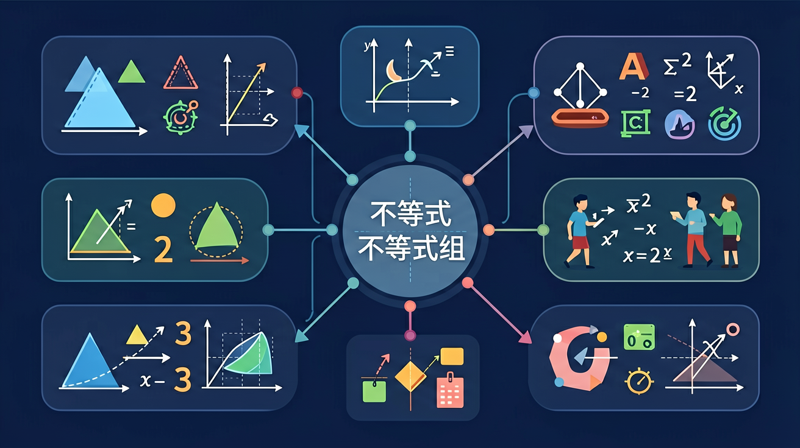

🎯 能判断不等式解集的空心/实心表示法
🎯 能分析含参数不等式组的解集变化规律
🎯 能计算实际生活中的不等式应用问题
❓ 为什么不等式解集有时候是空心圆点有时候是实心圆点？
❓ 遇到含参数的不等式组怎么确定解集范围？
❓ 手机套餐流量超出部分收费问题能用不等式解决吗？
学完这一课，这些问题你都能自信地回答。
不等式3x-5≤1的解集是？
哪个数轴表示x>0且x≤4？
🏪 超市规定：购物满100元才能享受折扣。小明的购物车总价为 x 元，享受折扣的条件是什么？
这个条件不是一个等式，而是一种"大于等于"的关系：
这就是一个不等式——用不等号连接两个代数式的式子。
| 符号 | 读法 | 数轴表示 | 端点 |
|---|---|---|---|
| < | 小于 | 向左的箭头 | 空心圆（不含） |
| > | 大于 | 向右的箭头 | 空心圆（不含） |
| ≤ | 小于等于 | 向左的箭头 | 实心圆（含） |
| ≥ | 大于等于 | 向右的箭头 | 实心圆（含） |
等式两边加减任意数、乘除任意非零数，等号不变。不等式呢？大部分情况相同，但有一个惊天大坑！
若 a > b，则 a + c > b + c（c 为任意实数）
例：3 > 1，两边+5：8 > 6 ✓
若 a > b 且 c > 0，则 ac > bc
例：3 > 1，两边×2：6 > 2 ✓
若 a > b 且 c < 0，则 ac < bc（不等号方向改变！）
例：3 > 1，两边×(-2)：-6 < -2 ✓（符号翻转）
记住：乘/除负数，不等号翻个身！
❌ 经典错误：解不等式 -2x > 6
错误：x > 6÷(-2) = -3（忘记翻转）
✗ 错误！两边除以 -2 需要翻转不等号
✅ 正确：-2x > 6 → x < -3（翻转！）
🎒 小明要参加活动，行程时间需要满足：超过1小时（路上堵车需要时间准备），但不超过3小时（不能耽误太久）。如何表示？
同时满足两个不等式：{ x > 1 且 x ≤ 3 } ，解集为 1 < x ≤ 3
例题：解不等式组 { 2x - 1 > 3 ① , x + 2 < 6 ② }
记忆口诀：
同向取中间（都向右/都向左→中间那段）
反向取两端（一左一右→两端各一段，可能无解）
任务：某同学前三次数学考试成绩为78分、85分、91分。他希望四次测试的平均分不低于85分。第四次至少要考多少分？
(78+85+91+x)/4 ≥ 85
254 + x ≥ 340
x ≥ 86
第四次至少要考86分。
在数轴上直观理解不等式解集，空心实心圆的区别很重要
用不等式描述温度范围，是自然界中不等式的直观应用
消费不超过预算、利润不低于成本——生活中的不等式组
当不等式含x²时，解集变成两段或中间一段，更有趣！